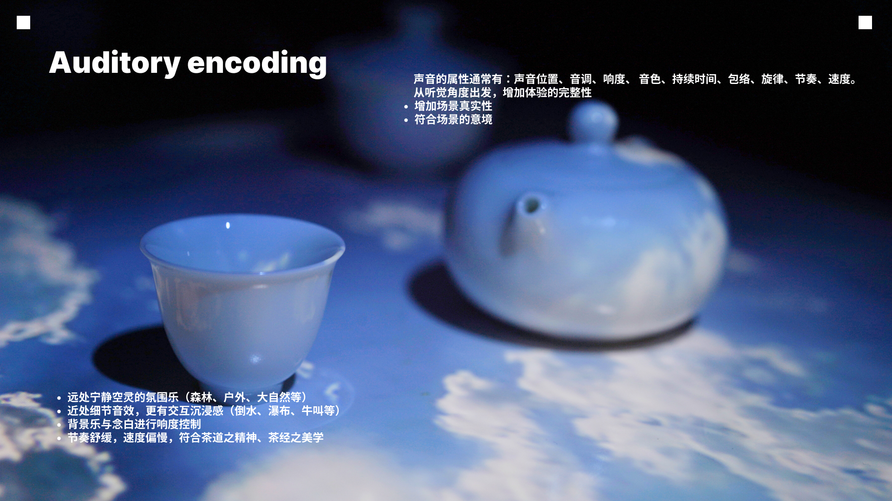

天地风月： Interactive Data Visualization Experience Projection
The Classic of Tea is the first academic work on tea not only in China but also in the world, and it is one of the three great tea books in the world. However, with the rapid development of the times and the intrusion of Western culture, modern people have lost their knowledge of this classic work. This work visualizes the textual data, artistic conception, aesthetic images and other contents of The Classic of Tea, creating an aesthetic visualization experience based on embodied cognition, and presenting and conveying it through a projection interactive device. In the intertwined and integrated story of the art of tea and The Classic of Tea, this work attempts to expound the contentment of the Chinese people's connection with plants and trees. It hopes to re-experience the ancient books with a new perspective and method, and retrieve the forgotten feelings and knowledge.
Year：2024.